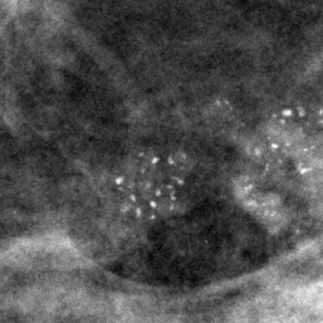
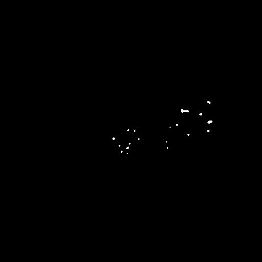

PTM brings together medical image analysis research, artificial intelligence, DICOM engineering, visualization and deployable software infrastructure. Our flagship research program focuses on mammography and microcalcification detection.
PTM is a medical artificial intelligence research and engineering platform designed to transform research algorithms into reproducible, deployable and accessible medical imaging systems.
The platform connects scientific research, AI model development, DICOM processing, visualization, inference services and specialized medical imaging applications within a unified ecosystem.
Our first flagship research program focuses on mammography and microcalcification detection, combining classical image processing, deep learning and attention-based AI methods.
Development and evaluation of algorithms for medical image analysis.
Transforming research prototypes into reusable software and AI services.
Building experiments and infrastructure that can be evaluated and extended.
Developing reusable tools and open-source software for the medical imaging community.
PTM's flagship research program investigates computational approaches for detecting and localizing microcalcifications in mammographic images using classical image processing, deep learning and attention-guided AI.
Investigation of morphological and enhancement methods including Top-Hat filtering, Laplacian-based enhancement, Hessian analysis and texture representations.
Development and evaluation of convolutional neural networks for microcalcification localization and segmentation.
Research into integrating image-processing priors with neural attention mechanisms to guide models toward relevant regions.
Exploring transformer architectures and attention mechanisms for medical image understanding.
Visualizing model decisions and regions of interest to improve interpretability and research understanding.
Standardized experiments, quantitative metrics and comparisons across classical and deep-learning approaches.
The research pipeline connects medical imaging preprocessing, computational priors and AI models within a reproducible evaluation workflow.
PTM is designed to bridge the gap between experimental research and reusable medical AI software systems.
Algorithms and scientific experiments.
Training, validation and benchmarking.
Reusable AI inference services.
DICOM processing and visualization.
Specialized medical AI tools.
PTM combines AI research with the software infrastructure required to process, visualize and deploy medical imaging models.
Centralized access to AI models, experimentation and model evaluation for medical imaging research.
Native medical imaging workflows including image ingestion, preprocessing, conversion and visualization.
Specialized visualization tools for reviewing medical images and AI-generated analysis results.
Connecting trained AI models with interactive medical imaging applications through reusable services.
Specialized applications built around concrete medical imaging research problems.
Reusable libraries and developer tools supporting medical image processing and reproducible research.
Explore how PTM applications connect medical imaging data with AI models and visualization tools.
From a mammography region of interest to an AI-generated segmentation output.


PTM brings together specialized medical AI applications, visualization tools and research infrastructure.
PTM develops reusable software components and developer tools that support medical imaging research and engineering.
Python tools for standardized medical image processing and research workflows.
Source code, development history and documentation for the medical imaging standardization library.
JetBrains IDE plugin enabling developers to inspect DICOM medical images directly within their development environment.
The PTM research program is supported by peer-reviewed work in medical imaging and computer vision.
PTM is open to collaboration with universities, hospitals, medical imaging researchers, AI organizations, infrastructure providers and industry partners.